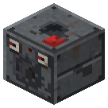
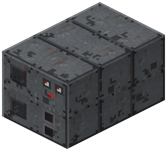

High-Pressure Reactor


Everything the steam reactor does, three times faster. Plus ammonia + water (+platinum) → nitric acid (Ostwald); coal + hydrogen + creosote → oil (Bergius). Controller of a lying 2x2x3 vessel: place it facing you - it is the bottom-left block of the end; 11 more HP reactor shells go 1 right, 1 up and 3 deep. Without the vessel it stands; the vessel runs up to 4 recipes at once (steam and output x4). Pipes and hoppers attach to the ends (front or back, any of the 8 blocks), through the end face only; sides and roof are blind.
Parameters
| Era | 4 — Oil and electricity at scale |
|---|---|
| Multiblock | no |
| Drive | steam |
| Tanks, mB | 16000, 16000, 16000, 16000 |
| What it does | all chemical reactor recipes ×3 + Ostwald, cracking, hydrogenation (60 recipes) |
| Input energy | steam |
Fed by
- IC2:itemHarz ← Chemical Reactor
- dustCopper ← Chemical Reactor
- Calcium Acetate ← Chemical Reactor
- Chalk ← Chemical Reactor, Stamp Mill
- Nitrocellulose ← Chemical Reactor
- Rosin ← Chemical Reactor
- Yellowcake (Ammonium Diuranate) ← Chemical Reactor
- Acetone ← Chemical Reactor
- Aluminum Sulfate Solution ← Chemical Reactor
- Ammonia ← Chemical Reactor
- Aqua Regia ← Mixer
- bioethanol ← Evaporator
- creosote ← Coke Oven Chamber, Wood Distillation Retort
- Formaldehyde (Formalin) ← Chemical Reactor
- fuel ← Chemical Reactor
- Hydrogen ← Chemical Reactor
- Lye ← Leach Vat
- Methanol (Wood Alcohol) ← Chemical Reactor
- Mixed Acid ← Mixer
- Petroleum Gas ← Oil Well
- Nitric Acid ← Brick Retort
- Nitrogen ← Linde Air Separation Plant, Chemical Reactor
- oil ← Oil Well
- Phenol (Carbolic Acid) ← Chemical Reactor
- Pyroligneous Acid ← Wood Distillation Retort
- steam ← Reactor Steam Generator
- Sulfuric Acid ← Contact Apparatus, Lead Chamber
- syngas ← Chemical Reactor
- Toluene ← Chemical Reactor
- Turpentine ← Chemical Reactor
- Uranyl Sulfate Solution ← Chemical Reactor
- water ← Artesian Well
Feeds
- IC2:itemHarz → Steam Autoclave, Chemical Reactor
- dustCopper → Electrolytic Cell, Chemical Reactor, Crucible Furnace
- dustSaltpeter → Lead Chamber, Brick Retort
- dustSulfur → Electrolytic Cell, Steam Autoclave, Design Bureau, Contact Apparatus, Lead Chamber
- Alumina (Aluminum Oxide) → Electrolytic Cell
- Calcium Acetate → Chemical Reactor, Brick Retort
- Chalk → Chemical Reactor
- Nitrocellulose → Chemical Reactor
- Smokeless Powder → Steam Cartridge Press
- Rosin → Chemical Reactor
- Uranium Dioxide (Natural) → Design Bureau, Calutron
- Acetone → Chemical Reactor
- Aluminum Sulfate Solution → Chemical Reactor
- Ammonia → Chemical Reactor
- Formaldehyde (Formalin) → Chemical Reactor
- fuel → Chemical Reactor
- Hydrogen → Chemical Reactor
- Methanol (Wood Alcohol) → Chemical Reactor, Mixer
- Nitric Acid → Chemical Reactor, Mixer
- Nitrogen → Chemical Reactor
- oil → Atmospheric Column (Shukhov Furnace)
- Phenol (Carbolic Acid) → Chemical Reactor
- syngas → Chemical Reactor
- Toluene → Chemical Reactor
- Turpentine → Chemical Reactor
- Uranyl Nitrate Solution → Chemical Reactor
- Uranyl Sulfate Solution → Chemical Reactor
Assembly
Without the vessel the controller stands. Assembled, it runs up to 4 recipes at once: steam and output xN, same time.

The controller — the high-pressure reactor: place it facing you. It is the bottom-left block of the end.

Bottom row of shells: 1 to the right and 3 deep (5 blocks).

Top row — 6 more shells. The 2x2x3 vessel is done: the end comes alive. Pipes and hoppers go to the ends; sides and roof are blind.


Faded blocks were placed in earlier steps.